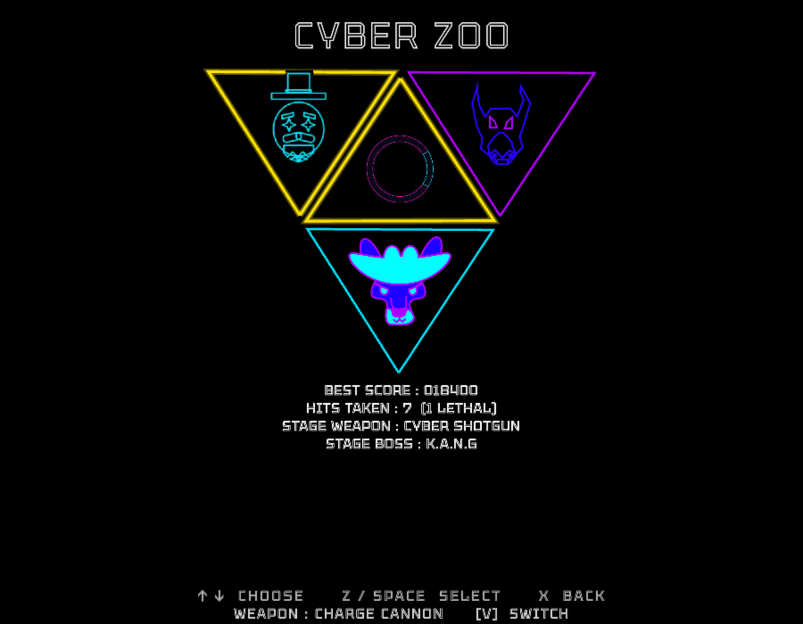

Stage
Cyber Zoo
Cyber Zoo is the stage of the Crystal of Spirit, and its boss is the gunslinging Kangunroo.
Story
The Crystal of Spirit was flung the farthest when the White Universal Crystal broke.
How stages work
You can play the four stages in any order, and the first time you enter one it starts with a tutorial. Every stage is one screen and a string of attack phases, and it ends in a boss. Each stage teaches you its weapon and gives it to you for good. Every stage also ends with its crystal: shoot it 9 times to extract it. Any shot works, and it never hurts you, but the Mothership closes in meanwhile and its edge hits for 3.
This stage
- Boss: Kangunroo
- Weapon you get: Cyber Shotgun
- Crystal: Crystal of Spirit
- Extraction: the Mothership comes from the left, with 4 laser gates.
In the extraction, shoot a gate's cyan block to turn its beam off.
